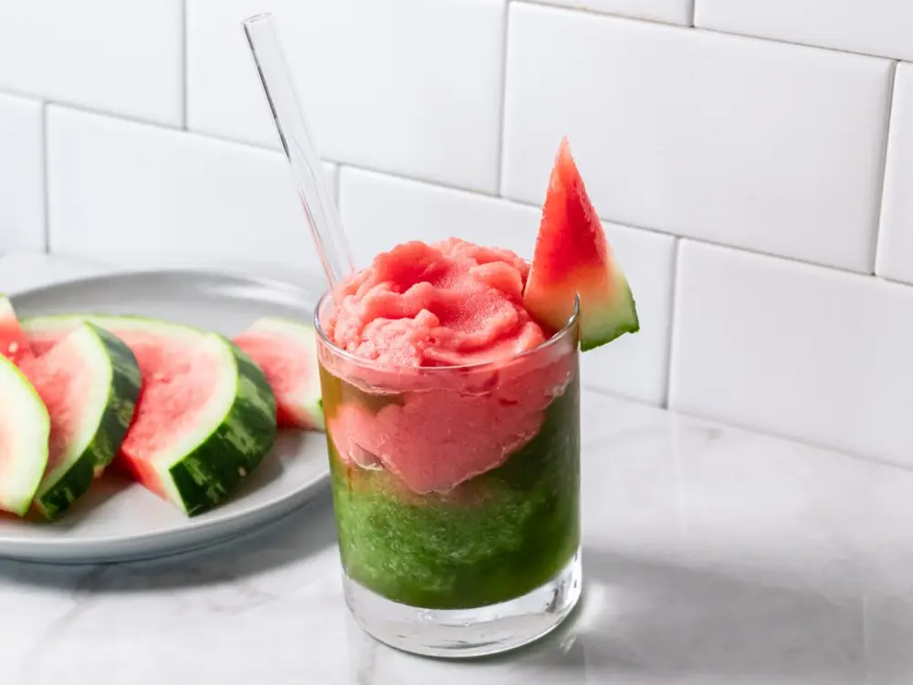
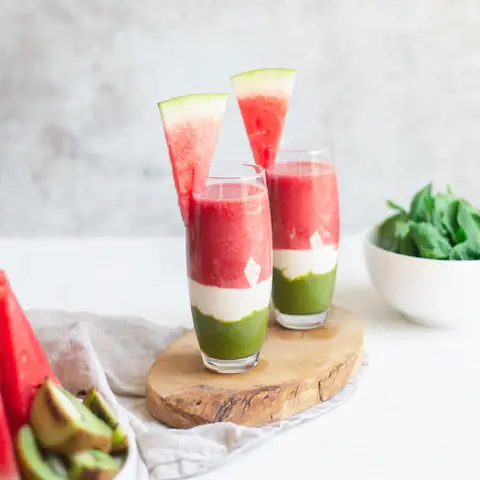
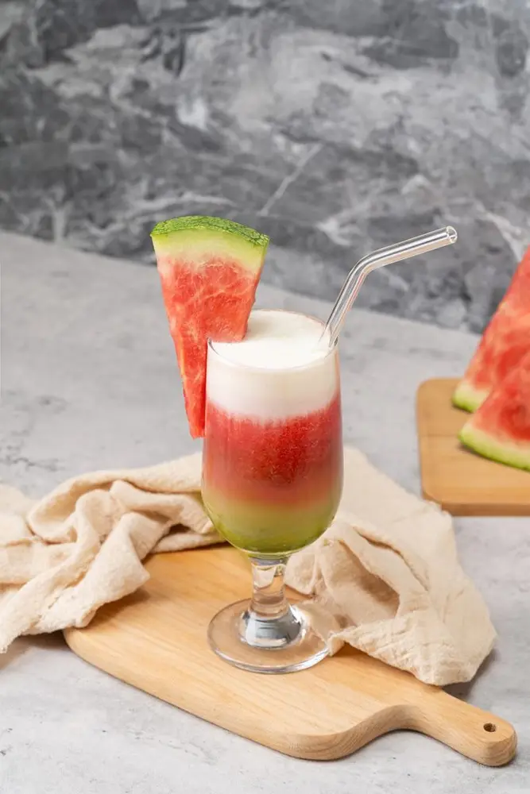

Articles / Recipes
Summer Bash – Let’s make Watermelon Matcha Latte!
2024-07-17 · Recipes, Recipes

Since it’s July, that means its prime summer time. In other words: Sun, beaches and all round fun! What’s better to celebrate summer than a range of colourful fruit smoothies?
With our range of fruit syrups and powders, making fruit smoothies can’t get any easier. Check it out!

Matching Matcha!
Matcha and Watermelon might sound like an odd couple, but it works surprisingly well!
We all love watermelon’s sweet, refreshing taste, which pairs well with the matcha’s woodsier flavours. Meanwhile, both the fresh milk and the cream top add an extra layer of creamy goodness…quite literally!
Each layer offers its unique taste and texture. From the crunchy, thirst-quenching watermelon slushie to the rich, savoury cream top, finishing off with sweet and mellow matcha latte. Feel free to enjoy separately, or mix them together for a flavour bonaza!
What’s more, the drink itself is a visual spectacle! Divided into layers of red, green and white, the drink perfectly recreates the colours of an actual watermelon.
Before you dig into this delicious smoothie, take a moment to snap some photos first. Instagram-worthy!


Watermelon matcha latte
This cute latte is not just beautiful to look at, but also delicious to boot! Beat the scorching summer heat with this unique treat.
What you’ll need
How to make:
Mix the watermelon syrup with water, then add the ice cubes. Blend until smooth, then set aside
Mix the fresh milk with the matcha powder, and pour into a cup or glass. Add the watermelon slushie, careful not to let both layers mix.
Blend the remaining milk with the cream top powder, then pour the foam on top. Enjoy!
Feel free to garnish with watermelon slices for a cute, summery look!
Get started!
Want to give this watermelon, matcha-filled goodness a try?
Pick up the ingredients now, contact us to learn more!